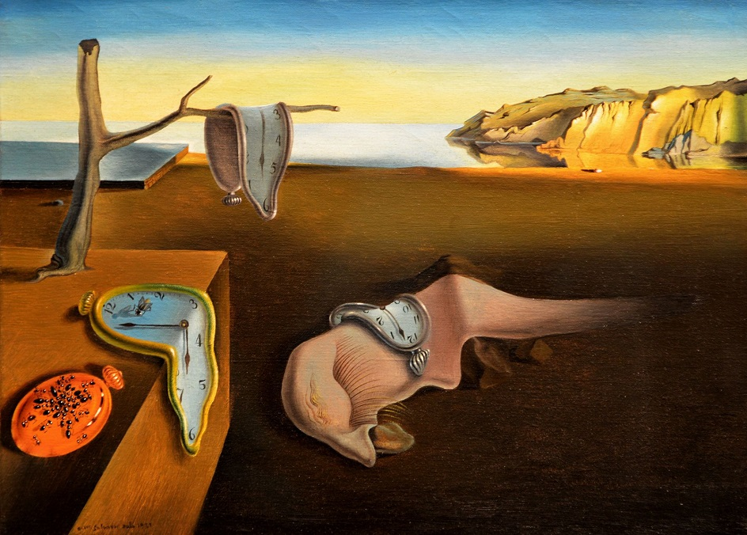
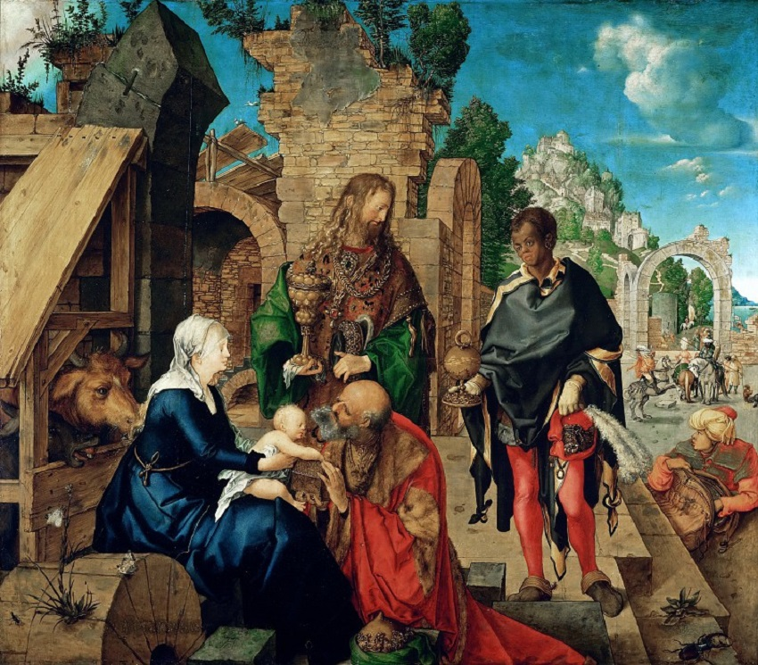

Сальвадор Дали — один из самых знаменитых художников XX века. Его произведения с немыслимыми образами и глубинным смыслом всегда эпатировали публику. Будучи представителем сюрреализма, живописец большое внимание уделял в своих работах теме сна как отражению бессознательного.
«Сон» — одна из самых популярных картин Сальвадора Дали, ставшая воплощением его параноидальных фантазий. В центре композиции находится огромная голова на фоне пустынного пейзажа, зависшая в воздухе посредством тонких подпорок.
Картина наводит зрителя на размышления о тяжести и одновременно хрупкости сновидений. Они обрушатся, стоит убрать у пугающего существа только один костыль. С другой стороны, опоры — это связи с реальностью, которые не дают полностью уйти в подсознание. Голова ассоциируется с мозгом, который никогда не освобождается от воспоминаний, поэтому здесь появляются образы собаки, лодки. На холсте доминирует голубой цвет, он подчеркивает нереальность изображаемого.
Картина «Сон» создана в период зрелого творчества Дали и входит в цикл работ «Паранойя и война». Внешним прототипом ключевого образа стала одна из скал мыса Креус: в этом месте гений неоднократно черпал вдохновение. Валун, именуемый «Спящая голова», художник изобразил почти без изменений, разве что лишив его материальности.
Он был написан всего за пару часов, а поводом к его появлению стали размышления Дали о природе расплавленного сыра.
Картина глубоко символична, наполнена цепляющими, двойственными образами, и относится к фрейдистскому этапу творчества Дали. Расплавленные часы на переднем плане обозначают утекающее время. Хронометр на столе — это настоящее, свисающий с голой ветки — прошлое, укрывший спящую голову — будущее.
Очертание плавящихся хронометров на картине Дали «Постоянство памяти» (у холста есть и иные названия — «Мягкие часы», а также «Время») появилось в голове мастера во время наблюдения за куском растекающегося от июльской жары камамбера. Идея произведения родилась во время ожидания возвращения Галы из кино, а работа над ним заняла всего 2 часа.
Художнику немецкого Возрождения Альбрехту Дюреру(1471-1528) заказал эту картину курфюрст Саксонский Фридрих Мудрый для капеллы своего замка в Виттенберге.Дюрер тогда только вернулся из первой поездки по Италии, поэтому черты североевропейской живописи - подробное изображение деталей, яркие, сияющие цвета - соседствуют здесь с влиянием итальянской живописи, которое выразилось в перспективном построении композиции. Кроме того в картине видны руины античных зданий, создающих сложные пространственные планы, что опять же было свойственно итальянской живописи.
Иконографический выбор «Поклонения волхвов» сосредоточен Дюрером на главных героях — Богородице, показывающей Младенца Христа трем волхвам-магам, принесшим в дар золото, ладан и смирну. Это три царя — Бальтазар, Каспар и Мельхиор. Бородатый король (Каспар), стоящий на коленях и склонившийся к Младенцу, напоминает мудрого старика в «Поклонении волхвов» знаменитого Леонардо. Вполне вероятно, что Дюрер вдохновлялся этой работой из Уффици. Герой Дюрера преклоняет колени и смотрит на младенца Христа с благоговейной нежностью.